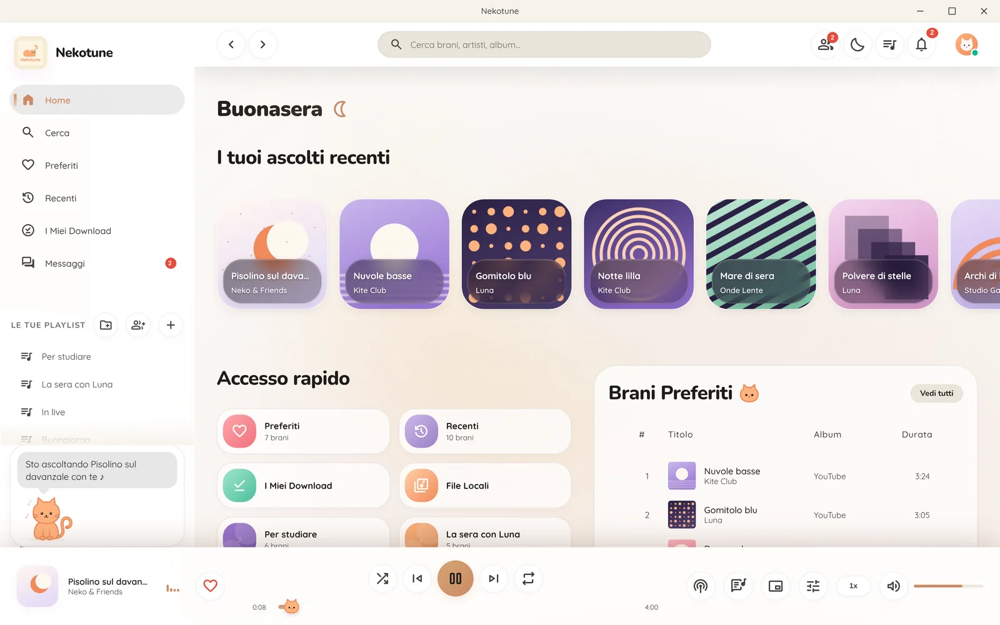
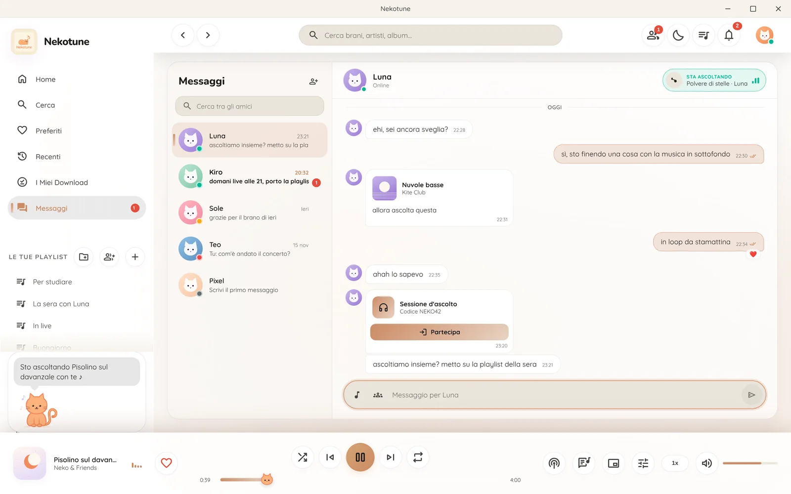
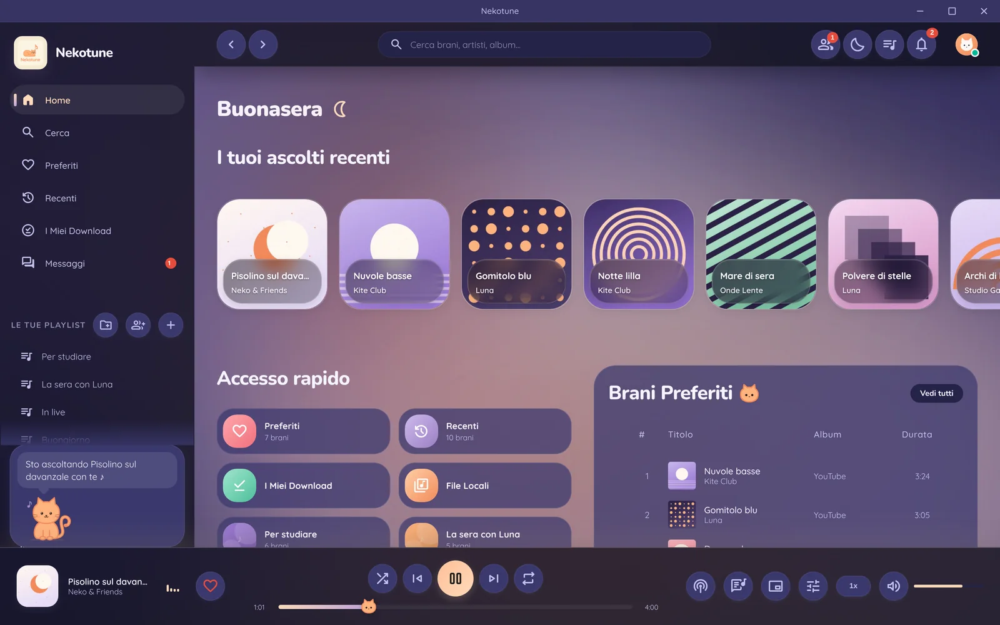
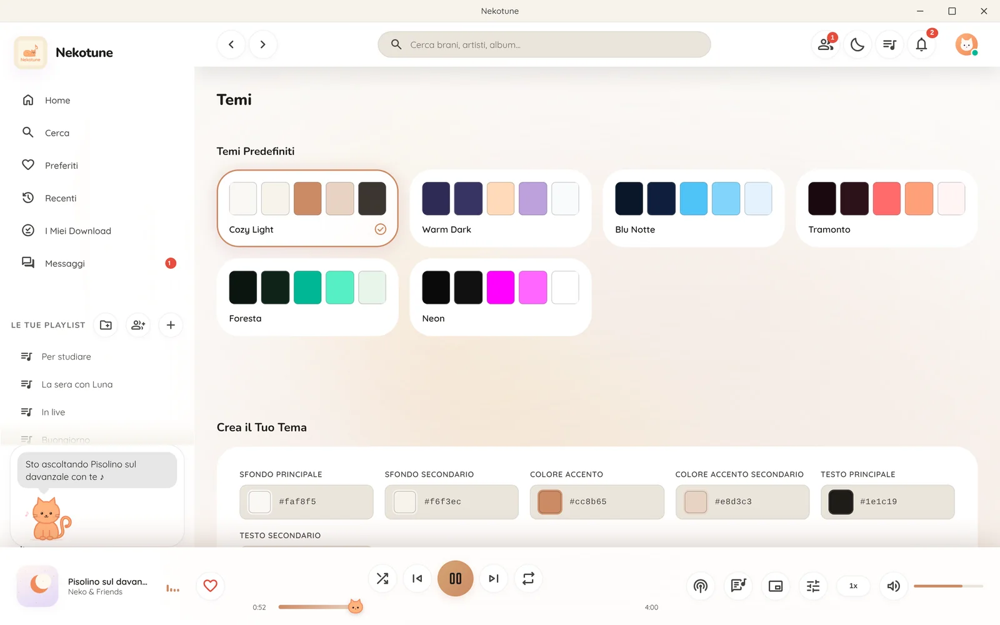

Tutta la musica che vuoi, e un gatto che l'ascolta con te.
NekoTune è un lettore musicale gratuito per il computer: cerchi un brano, lo ascolti, lo salvi offline e lo condividi con gli amici. Senza pubblicità.
Pisolino sul davanzale
Neko & Friends
Neko dorme. Premi play.
La musica del lettore di prova è suonata dal browser in tempo reale. Scorri per fare il giro della stanza.
Cerchi, ascolti, salvi.
Dentro c'è il catalogo di YouTube Music: brani, album, artisti, remix e cover. Il resto lo decidi tu.
- Smart Radio
- Parti da un brano e la coda continua da sola con musica simile.
- Testi sincronizzati
- Le parole scorrono insieme alla canzone, riga per riga.
- Offline
- Salvi i brani nell'app o li scarichi sul PC in MP3, e li ascolti anche senza internet.
- Importa da Spotify
- Incolli il link di una playlist e la ritrovi in NekoTune.
- Equalizzatore e temi
- Il suono e i colori come piacciono a te, compresi i temi che crei tu.
- Mini player
- Una finestrella sempre in primo piano mentre lavori o giochi.
Con gli amici è meglio.
Aggiungi i tuoi amici e la musica diventa una cosa da fare insieme. Qui c'è Luna, che ha appena trovato un brano da farti sentire.
- Messaggi. Scrivi agli amici e condividi il brano che stai ascoltando con un clic.
- Sessione di gruppo. Ascoltate la stessa musica nello stesso momento, con la chat accanto.
- Playlist condivise. Una playlist che modificate in più persone.
- Cosa ascoltano gli altri. Lo vedi accanto al loro nome, e con un clic lo ascolti anche tu.
Pensato anche per chi fa stream.
Si abbassano le luci, si va in live. Mentre giochi, la tua musica la vede anche la chat.
- Widget per OBS. Il brano in riproduzione in sovrimpressione, in tre stili, chiaro o scuro.
- Attività su Discord. "Sta ascoltando" sul tuo profilo, con copertina e tempo.
- NekoBot. Con
/nekotune nowil tuo server vede cosa stai ascoltando.
Porta Neko sul tuo computer.
NekoTune è gratis, per Windows 10 e 11. Le altre versioni sono nella pagina delle versioni.
L'account serve solo per amici, messaggi, sessioni e backup delle playlist.
Dentro NekoTune
Schermate vere dell'app. I brani, le copertine e gli amici sono di prova, inventati per queste immagini.




Domande
È davvero gratis?
Sì. Non ci sono abbonamenti né pubblicità.
Da dove arriva la musica?
Dal catalogo pubblico di YouTube e YouTube Music. NekoTune non ospita brani: li cerca e li riproduce per te.
Serve un account?
Per ascoltare no. Serve per aggiungere amici, scrivere messaggi, fare sessioni di gruppo e tenere un backup di playlist e preferiti tra più computer.
Funziona senza internet?
Sì, con i brani che hai salvato offline nell'app o scaricato sul PC.
C'è per telefono?
Per ora NekoTune è per computer.
La musica di questa pagina è di qualcuno?
No: i tre brani del lettore di prova li suona il browser mentre li ascolti, accordo per accordo. Le copertine, i brani e gli amici che vedi nelle schermate e nei video dell'app sono inventati.